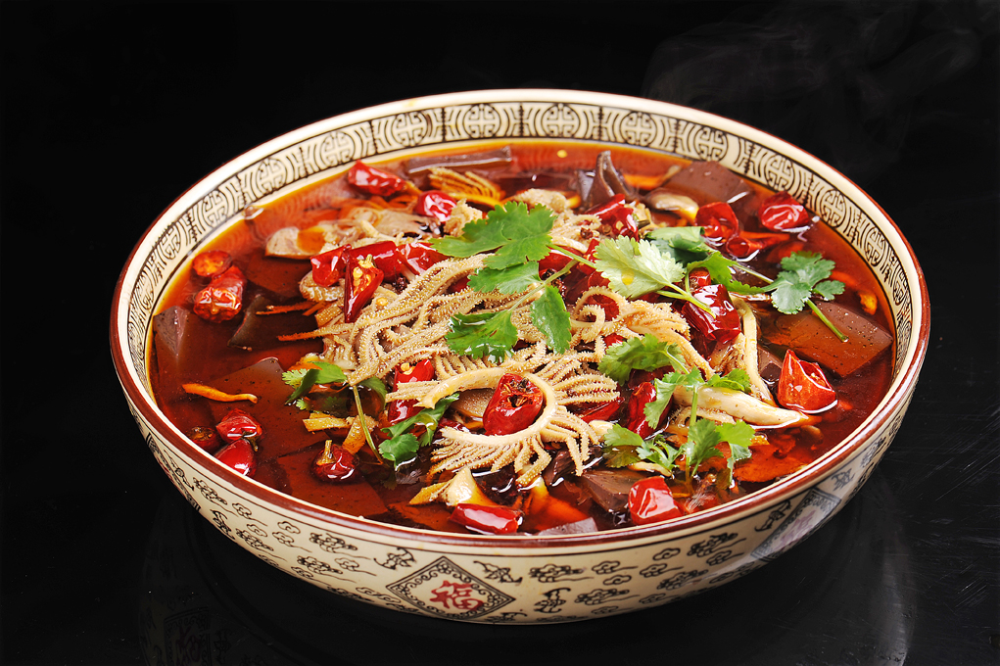

川菜介绍
川菜即四川菜肴，是中国特色传统的四大菜系之一、中国八大菜系之一。 新常态下对现代川菜理论体系的重新构建，包括川菜三派的划分， 是在已有定论的上河帮，小河帮，下河帮的基础上， 规范化完整表述为：川西地区以成都官府菜、乐山嘉州菜为代表的上河帮川菜； 川南地区以自贡盐帮菜、内江糖帮菜、泸州河鲜菜、宜宾三江菜共同为特色的小河帮川菜， 川东地区以重庆江湖菜为典范的下河帮川菜。三者共同组成川菜三大主流地方风味流派分支菜系， 代表川菜发展最高艺术水平。
川菜取材广泛，调味多变，菜式多样，口味清鲜醇浓并重，以善用麻辣调味著称， 并以其别具一格的烹调方法和浓郁的地方风味，融会了东南西北各方的特点， 博采众家之长，善于吸收，善于创新，享誉中外。 四川省会成都市也被联合国教科文组织授予世界美食之都的荣誉称号。
古代川菜初期以“尚滋味”、“好辛香”为其特点；中期以“物无定味，适口者珍”为其特色；近代以来，直至今日，川菜以“一菜一格，百菜百味”、“清鲜醇浓，麻辣香甜”为最大特点。现代川菜以“传承不守旧，创新不忘本”的思想理念，以“海纳百川，兼容并蓄”的开放姿态，以“融会贯通，食古化今，集众家之长，成一家风格”的与时俱进的创造性，不断发展和前进，屹立于中国菜系之首，使川菜成为遍布于全中国、全世界的真正大众民菜， 川菜是“民以食为天”理念的最好体现，使川菜有“民菜”之誉。“驰名世界，誉满全球”是对川菜的最高褒奖！